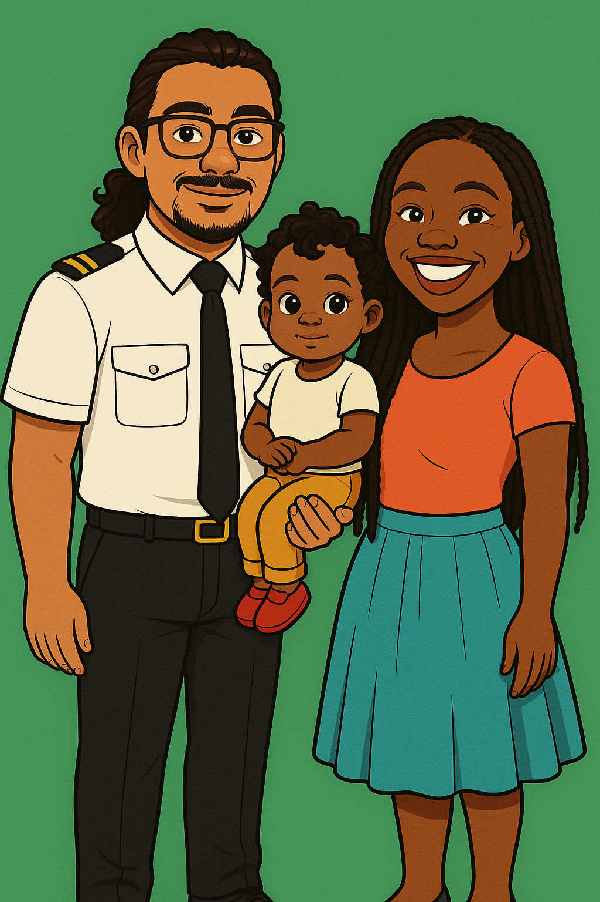

Le compte à rebours est lancé ! Découvrez un site magique dédié à notre grand jour. Des surprises, des infos utiles, et plein d’amour vous attendent. Cliquez, explorez et préparez-vous à vivre une aventure inoubliable avec nous !